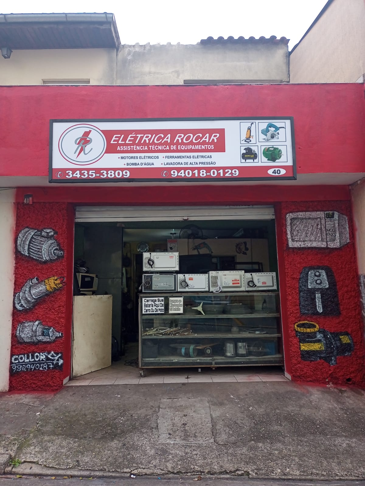

Mais de 20 anos de tradição, dedicação e paixão pela mecânica elétrica
Antes de existir fachada, placa ou cartão de visita, existia só um rapaz de 20 anos, uma mesa na cozinha de casa e um motor elétrico queimado esperando para ser desmontado. Não havia oficina. Havia vontade — e a teimosia de quem decidiu aprender fazendo, parafuso por parafuso, bobina por bobina.
O trabalho duro logo pediu mais espaço do que uma cozinha podia oferecer. Assim nasceu a primeira oficina de verdade, na Viela Apiaí, aqui em Guarulhos — pequena, simples, mas já com a mesma exigência que carrega até hoje: só devolver um equipamento quando ele estiver funcionando de verdade.
Sozinho na bancada, sem ninguém para dividir as dúvidas técnicas, ele foi atrás do conhecimento onde ele estivesse. Aprendeu a decifrar furadeiras e serras Makita, motores pesados como os populares "Jacaré", aparadores de grama, masseiras e maquinário inteiro de padaria — até dominar também os eletrodomésticos que todo guarulhense tem em casa: micro-ondas, aspiradores de pó, lavadoras de alta pressão e bombas d'água. Cada equipamento novo que chegava era um desafio aceito, nunca recusado.
A reputação de fazer o serviço certo, sem enrolação e sem cobrar o que não precisava, começou a correr de boca em boca pela região de Cumbica. A demanda cresceu, e a oficina cresceu junto — mudando-se para a Av. Córrego Valadão, onde a Rocar deixou de atender só famílias e passou a ser parceira técnica de empresas e indústrias inteiras.
Hoje, consolidada na Rua Soldado Francisco de Almeida, na Vila Yaya, a Elétrica Rocar já não depende de um par de mãos só. Conta com uma equipe especializada — e carrega algo que nenhum equipamento moderno consegue reproduzir: a arte do rebobinamento de motores sendo ensinada de pai para filho, bobina por bobina, exatamente como foi aprendida há mais de vinte anos. Tradição e atualização técnica trabalhando lado a lado, na mesma bancada.
Da mesa da cozinha à referência técnica de Cumbica
Uma mesa na cozinha, aos 20 anos
Os primeiros motores desmontados e remontados em casa, sozinho, aprendendo na prática — sem oficina, sem ajuda, só vontade de aprender o ofício.
Viela Apiaí, Guarulhos
O primeiro endereço de verdade, dedicado à manutenção de motores elétricos, com a mesma exigência de sempre: só entregar o equipamento funcionando de verdade.
Av. Córrego Valadão
Com a reputação de serviço honesto correndo pela região, a oficina cresceu e se tornou parceira técnica de empresas e indústrias de Cumbica.
Rua Soldado Francisco de Almeida, Vila Yaya
Mais de 20 anos depois, uma equipe especializada e o rebobinamento de motores sendo ensinado de pai para filho — tradição e modernização lado a lado.
O que sustenta mais de 20 anos de Rocar
Diagnóstico Honesto
Antes de qualquer orçamento, primeiro vem a avaliação sincera. Aqui, ninguém troca peça que não precisa trocar — é assim desde a mesa da cozinha, e é assim até hoje.
Domínio Técnico Multimarcas
Da furadeira de uso doméstico ao maquinário industrial de padaria, passando por motores Jacaré e equipamentos de indústrias de Cumbica: duas décadas de bancada ensinaram a consertar de tudo, com qualidade.
Legado Familiar
O conhecimento do rebobinamento de motores está sendo passado de pai para filho. Não é só uma técnica — é um compromisso de família com quem confia na Rocar.
Venha conhecer a oficina
Rua Soldado Francisco de Almeida, 40 — Vila Yaya, Guarulhos - SP
Ver Endereço e Contato